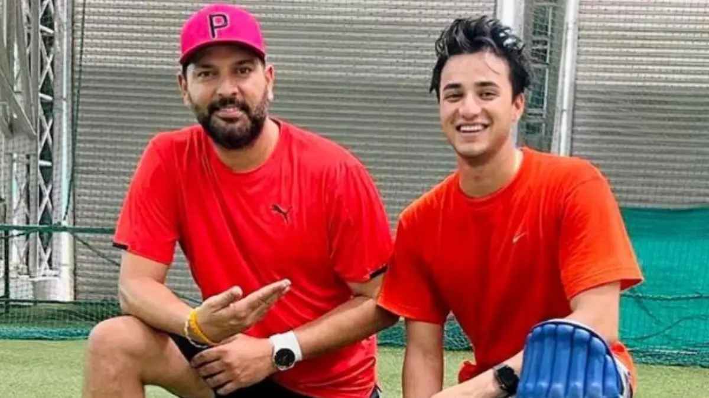
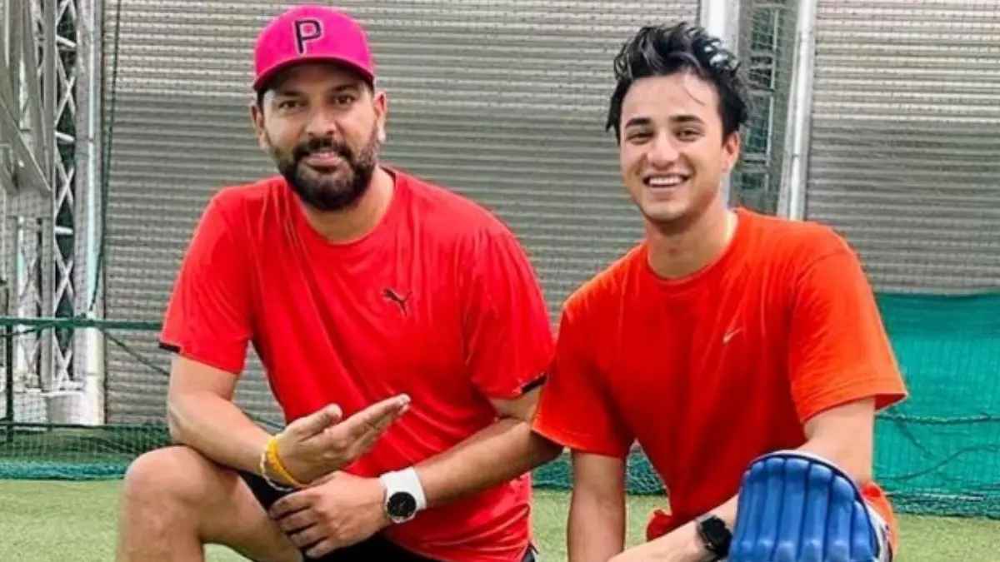

Yuvraj Singh - The Unsung WorldCup Hero!
 Yuvraj Singh... The man for big occasions for India.
The best and most dependable middle-order batsman India has ever produced.
Quite handy with the ball too!
Yuvraj Singh... The man for big occasions for India.
The best and most dependable middle-order batsman India has ever produced.
Quite handy with the ball too!
Career Stats
| Format | Matches | Runs | Highest Score | Wickets | Best Bowling |
|---|---|---|---|---|---|
| ODIs | 304 | 8701 | 150 | 111 | 5/31 |
| Tests | 40 | 1900 | 169 | 9 | 3/9 |
| T20Is | 58 | 1177 | 77* | 28 | 3/17 |
Awards: Man of the Tournament - ICC Cricket World Cup 2011
About the left-hand clutch batsman Yuvi
☛ Yuvraj Singh, a prodigious talent, made his debut for India in 2000 at the ICC KnockOut Trophy, where he won the Player of the Tournament award.
☛ In the 2002 NatWest Series final, Yuvraj played a crucial role in India's famous victory at Lord's, scoring 69 runs off 63 balls.
☛ Yuvraj was diagnosed with cancer (a germ cell tumor) in 2011 but made a successful comeback after treatment, returning to international cricket in 2012.
☛ One of Yuvraj's most memorable performances came in the 2007 ICC T20 World Cup, where he hit six sixes in an over against England's Stuart Broad.
☛ Yuvraj Singh was the Man of the Tournament in the 2011 ICC Cricket World Cup, playing a pivotal role in India's victory with both bat and ball.
☛ Throughout his career, Yuvraj was known for his flamboyant batting, electric fielding, and handy bowling. He retired from international cricket in 2019, leaving behind a legacy of unforgettable moments and match-winning performances.
☛ Yuvraj was awarded the Padma Shri, India's fourth highest civilian award, in 2012.
☛ He is the son of former Indian fast bowler and Punjabi actor Yograj Singh.
☛ Yuvraj played a key role in India's U-19 World Cup victory in 2000, showcasing his all-round abilities.
☛ He was instrumental in India's historic Test series win in Pakistan in 2004, with a century in the decisive final Test.
☛ Yuvraj has contributed significantly to charity, especially through his foundation 'YouWeCan', which focuses on cancer awareness and support.
☛ In 2014, he was the highest-paid cricketer in the IPL auction, bought by Royal Challengers Bangalore for INR 14 crore.
☛ Yuvraj holds the record for the fastest fifty in T20 internationals, achieved in just 12 balls against England in 2007.
☛ He has also pursued a career in acting, appearing in several Bollywood films and television shows.
☛ Yuvraj's autobiography, "The Test of My Life", chronicles his battle with cancer and his journey back to cricket.
 
